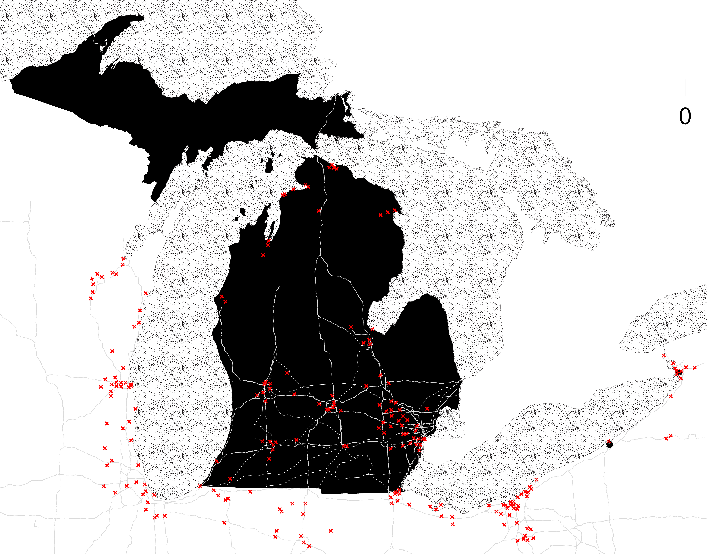

CLOSE
context
key words: Synergy, Vacancy, Post-Industrialization, Energy, Phalanstery, Social Equity
Dealry, Detroit, MI, US
year: 2020/12

This proposal projects a utopian future
set within the paradigms of carbon
neutrality, energy recovery and zero
waste. Drawing influence from the
industrial ecology of Kalundberg
in Denmark, I proposed a series of
synergistic programs within Delray
that imagine an active future for
existing industries in decline. This
constellation of industrial activities
are imagined to be operating within a
model of industrial succession: where
existing programs and their related
material flows are interconnected by
the circulation of raw materials, by-
products of their waste streams and
recoverable energy.diagram:process
In this context, the cultivation of
new remedial and recycling programs
intentionally produces a new urban
assembly that gives temporar y
expression to indeter minacies,
fluxes, possible futures. In particular,
future urbanism is seeded by a set of
industrial byproducts - a new set of
urban artifacts around which future
urbansims might be staged. These
euphoric byproducts aim to produce
a form of post industrial sublime beauty, breeding new hallucinations
of possibility. I imagine a phalanstery
composed simultaneously of
technopositive researchers and
industrialists in counterpoint to a
population of circular system flaneurs
and fanatics.
The method is to retrofit the current
resource-energy structure for civic
engagement and civil rights as to
deposit for environmental and social
sustainability and to gain recognition
in political economic dimensions.
Through the integration of public
outreach programs in the testing field
of Delray, this multi-agency field of
actors propels citywide participants
and a global audience for models of
sustainable industrial futures.
Delray is a
neighborhood in
southwest Detroit,
seeing Windsor
across the Detroit
River. Located in
southeast Michigan,
it accommodates a
heavy concentration
of interstate highways,
water transportation,
and cement industry.
Delray is siloed by
the crossing railroads
Interstate 75 and
the river, occupied
with industrial
warehouses, terminals
and distribution
centers. Subjected to
planned blight, the
neighborhood is heavily
polluted land rendering
the area undesirable to
inhabit.
CLOSE
technicality
My early research began with a focus
on existing cement production
processes and their intersections with
three major socio-ecological issues: Closed loop integration of waste
carbon fiber, (that is commonly
used by car manufacturers General
Motors and Ford, with a low
utilization rate of less than 70%,
carbon fiber recycling possess a
high market value and current
research suggests this material
could greatly enhance concrete’s
performance. Coal ash disposal and reuse, which
is generated in the power plant
near Delray, it will be shut down
by 2022, coal ash is one of the
additives in cement production.
And promising for harvesting
carbon dioxide. Emerging industry-wide
aspirations for a carbon neutral
concrete, that have been explored
through carbon sequestration
models, yet currently remain
proven at a laboratory scale
restricted by feasibility and CO2
supply chains. The proposal shifted to synthesize
a series of existing industries of
competing and complementary vested
interests, in order to introduce a
new urban metabolism with regard
to resource, ecology, and habitat
management, and its manifestation as
“zone zero Delray”. In phase two,I propose to introduce
a circular economy of material and
biotech innovation and product lifespan extension driven by
reverse logistics catalysed by the
construction of the Gordie Howe
bridge and in dialogue with Detroit’s
industrial inheritances and the current
aspirations within Southeast Michigan
as a regional center for advanced
manufacturing. With the incremental transformation
of industry and enhancement of the
desirability of the living environment
conditioned by bio-tech greenhouse
innovation and energy circularity, The
project anticipates several [possible
futures for Delray - each potential
would respond locally to the strategy
of byproduct “seeding” in different
ways.